Questionnaire, rebuilt from the logic up.
A configurable pre-visit triage editor that replaces stacked forms — and a real-time experience that makes 4-depth branching logic feel like a natural conversation.
Where this fits.
This is one module within a larger B2B medical booking platform — a system used by 300,000+ annual bookers. The pre-visit questionnaire is the branch that connects the booking form to the actual triage, and where this project lives: turning a rigid, static intake into a responsive, conversational one.
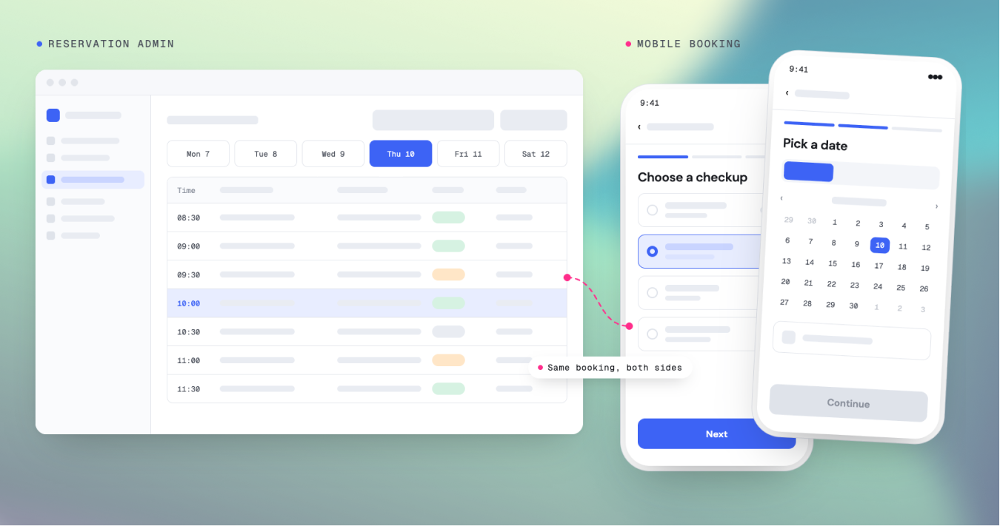
A hardcoded form that couldn't
keep up with the clinic's reality.
The old questionnaire was a single, hardcoded form — one structure for every clinic. When a hospital needed to add a triage question, an engineer had to ship a code change. Operators couldn't adjust anything themselves, and the experience on mobile was a long, undifferentiated scroll. There was no admin tool at all.
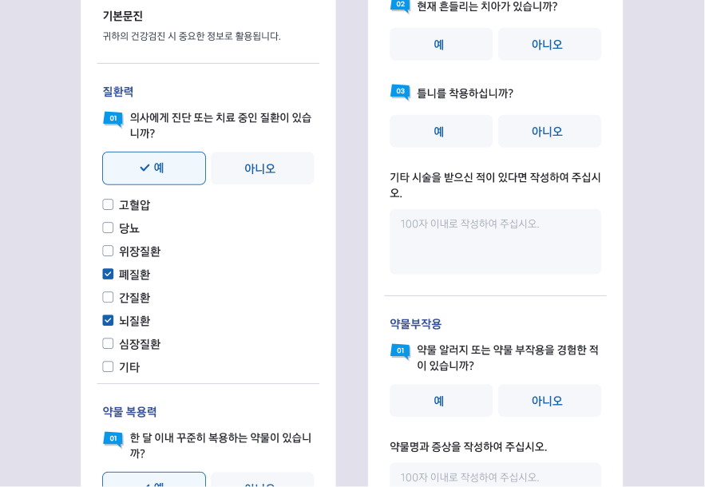
Mobile — the original stacked form
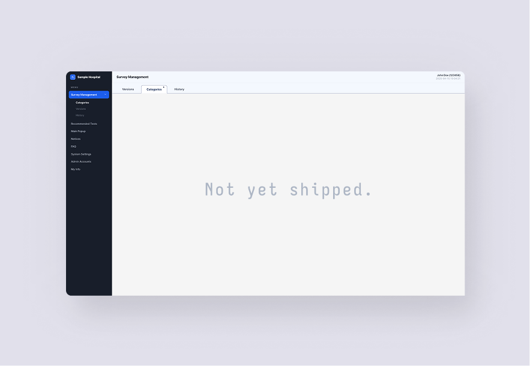
No questionnaire builder
The challenges
Designing for the people
who build the form.
The editor had to render every condition a clinician could set — creating questions, conditional answer routes, and inline queries, all the same time. I had to stay tethered to the existing back-office data model while introducing branching logic that operators could reason about without reading a tree.
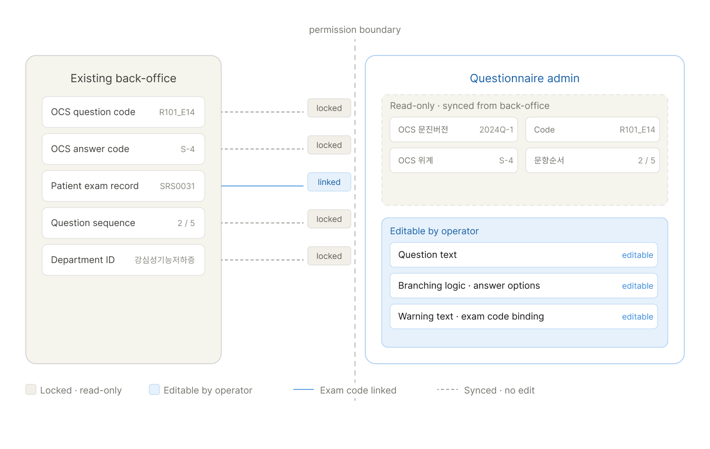
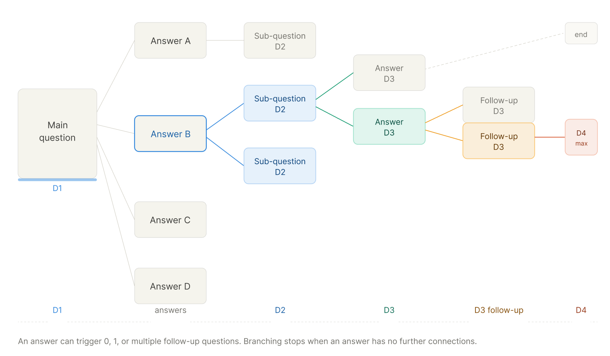
Mapping every way an answer could look
Each answer type — from a simple radio to a nested multi-select with branching logic — had its own edge case and its own state in flow.
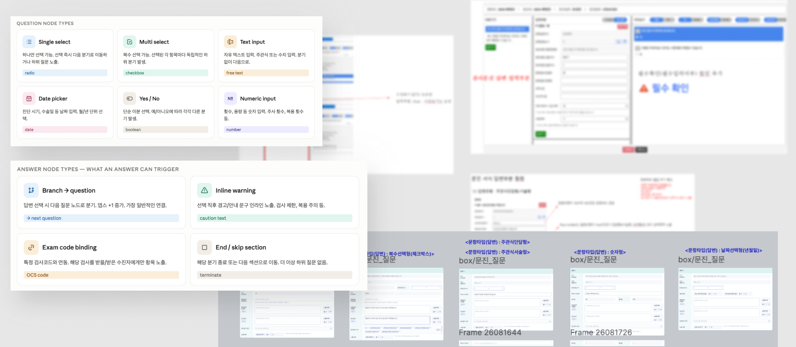
See what you're building,
as you build it.
A live mobile preview sits beside the editor, so operators can see exactly how each change lands for the patient — no publishing, no guesswork.

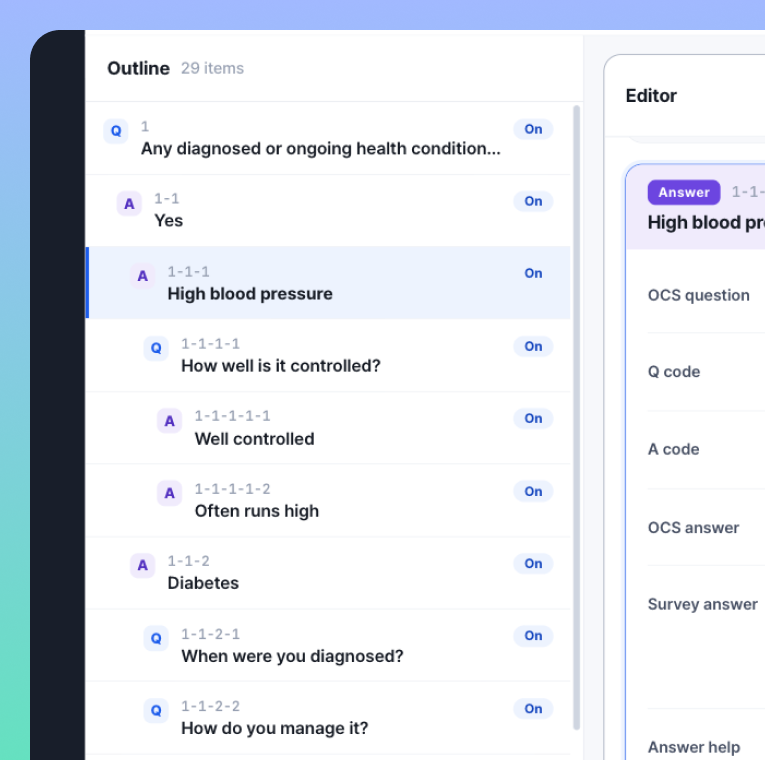
Panel 1The full question hierarchy stays visible at all times — operators never lose track of where they are in the structure.
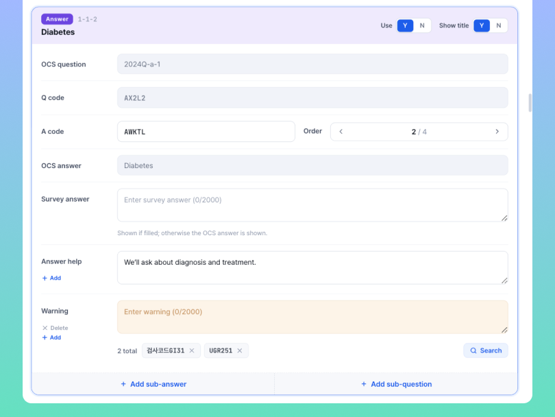
Panel 2OCS codes sync from the back-office and stay locked. On top of that, operators can add warning text, help copy, and exam code bindings — so certain questions only appear for patients scheduled for that test.
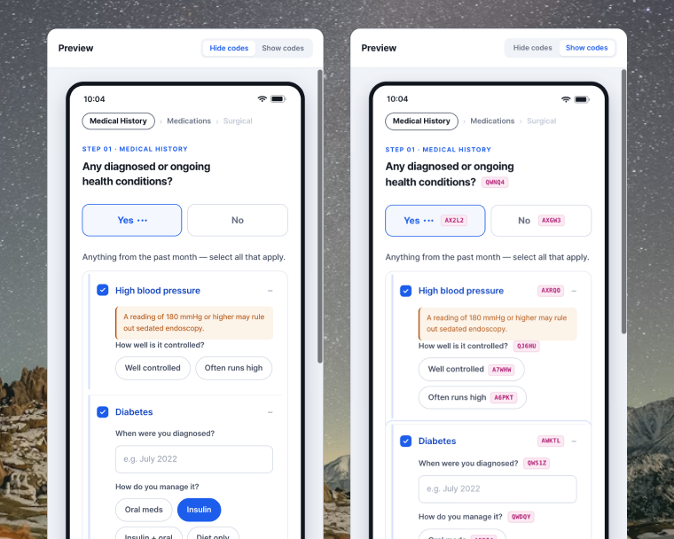
Panel 3The preview reflects every edit instantly, so the change is verified by the person who made it — in the same view.
← scroll to see editor states
Designing for the people
who fill it out.
Months of branching logic, 4-depth conditions, and conditional queries — none of it matters if the patient can't move through it calmly. The patient's job is simply to answer one question at a time.
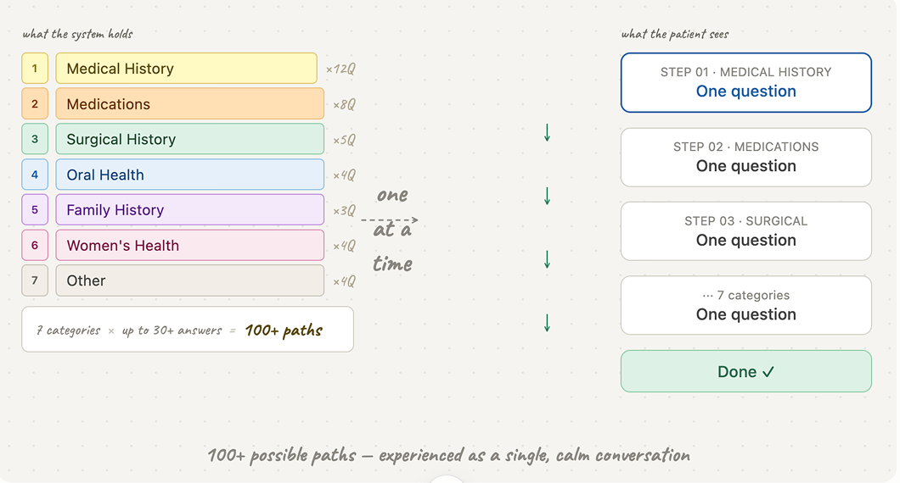
From one long scroll to one question at a time
A single scrolling questionnaire put the full weight of the system on the patient. Splitting into one question per screen reframed the work — each step asks one thing, and the rest stays out of the way.
A clear step count and back-navigation let people move forward without anxiety about how far they had to go, or whether a question routed somewhere unexpected.
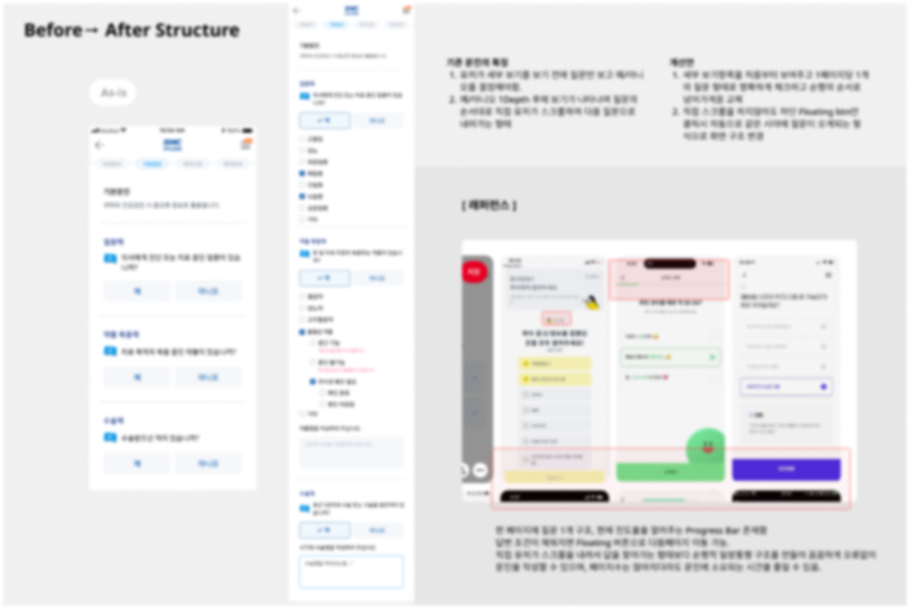
Patients answer step by step — giving operators every piece of information they need, without ever feeling the weight of it.
The questionnaire,
as patients experience it.
Weeks of branching logic, OCS mappings, and conditional warnings — none of it should surface. The patient's job is simply to answer, one question at a time.
Components that adapt to every depth
Each answer type required its own mobile component — designed to expand and nest in place, without a page reload. One implementation pattern that works across all the cases the admin can generate.
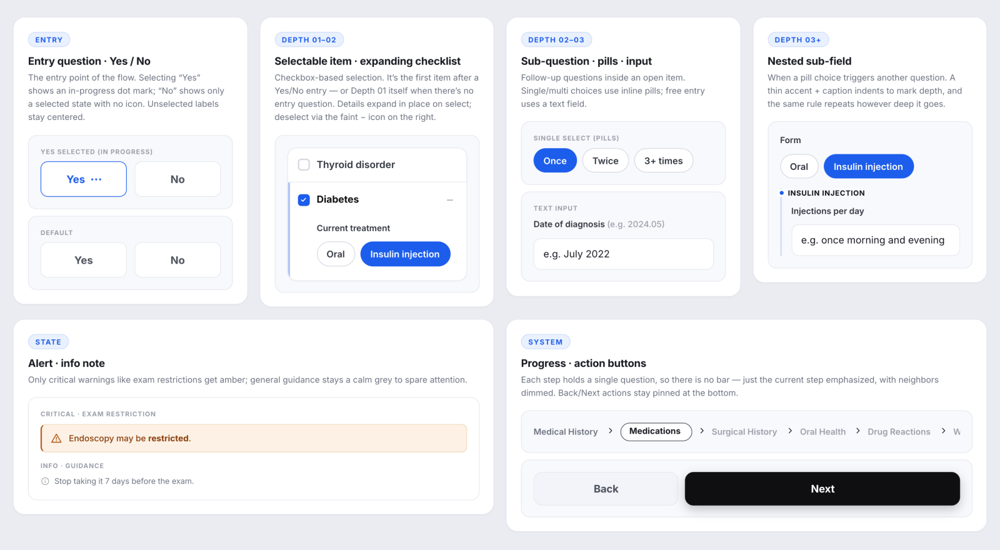
What this project taught me.
Building logic this complex from scratch — with no reference to lean on — was the real challenge. The admin was entirely requirements-driven; the mobile was about keeping it effortless for patients, then making sure the components synced cleanly with the admin to ease development. As a client project, the exact numbers aren't mine to know — but the system is in active use, and that's enough.
Your reaction counts too
If you'd approach this differently, or saw something worth pushing further — I'd welcome the thought.